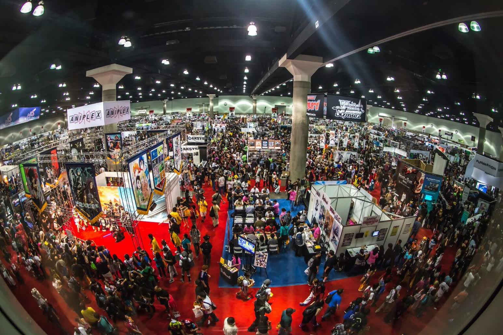
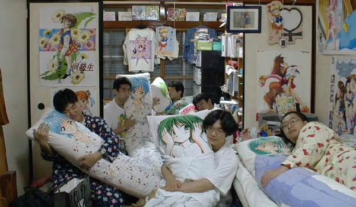

Cel mai mare impact pozitiv al anime-urilor se resimte chiar în țara lor de origine.
Industria producerii de manga și animații este una dintre cele mai mari ale țării,
în fiecare oraș fiind numeroase biblioteci pline cu benzi desenate și magazine
de unde se pot cumpăra seriale întregi anime, iar aceste produse artistice sunt
și exportate în cantități mari, în special către S.U.A. și Europa. Valoarea de
piață a acestei industrii în 2014 de exemplu a ajuns la suma de 13.5 miliarde de dolari,
înregistrând o creștere de 10% față de anul precedent.
Impactul pozitiv nu este doar economic ci și social.
Datorită numărului mare de fani dedicați în fiecare an sunt
organizate diverse întâlniri atât la nivel național cât și la nivel internațional.

Acestea au rolul de a crea o comunitate solidă cu un puternic interes comun.
În cadrul acestor întâlniri participanții sunt încurajați să vină costumați
în personajele lor favorite, ambianța evenimentelor fiind una plină de viață și culoare.
De asemenea trebuie menționat că prin faptul că multe anime-uri conțin
elemente puternice de psihologie, filozofie și cultură japoneză,
ele devin un adevărat izvor de cunoștințe în aceste domenii pentru tineri,
informațiile fiind prezentate într-un mod accesibil.
Unul dintre cele mai importante domenii însă în care se resimte influența pozitivă
a animațiilor japoneze este chiar cinematografia occidentală. Mulți directori de imagine
s-au lăsat inspirați de deschiderea japonezilor la teme rar abordate în desenele și filmele
din occident, astfel fiind produse capodopere renumite precum "Inception" și "The Lion King",
mai multe exemple fiind prezentate în panoul din dreapta.
Evident însă că acolo unde este bine apare și răul pentru a echilibra balanța realității.
Unii cunoscători ai domeniului poate au observat că am evitat prezentarea anumitor categorii de anime-uri
populare și a anumitor detalii cu un impact destul de mare, din păcate negativ.
Japonezii sunt cunoscuți printre altele și pentru o cultură destul de perversă, uneori fiind acuzați chiar
că ar încuraja violul și sexualizarea enorm de exagerată a femeilor. Între aceste zvonuri se află destul adevăr,
adevăr ce se poate observa cel mai ușor chiar în anime-urile atât de populare în Japonia ce sunt abundente cu
fete sumar îmbrăcate, scene sexuale, violență exagerată și multe alte elemente problematice. Dacă există câteva anime-uri
care incorporează aceste elemente doar ca și niște categorii estetice pentru a completa artistic produsul finit, majoritatea
se folosesc de erotism pentru a atrage vizionatori câți mai mulți, fiindcă producătorilor le este mult mai ușor să producă
scene imorale decât să creeze o poveste originală. Surprinzător însă cei din occident sunt cei care "consumă" cel mai mult
astfel de imagini, astfel multe anime-uri fiind aproape obligate de către fani să introducă "fan-service", scene
ce apelează la masele comune de oameni cărora nu le pasă de partea artistică a animațiilor. Astfel au apărut genuri de anime
ce promovează o imagine total irealistă a femeii în care ea are doar menirea de obiect sexual. Una dintre cele mai populare
categorii de anime sunt Hentai-urile, termen pe care aș prefera să nu îl explic aici datorită lucrurilor pe care le incorporează.
O altă problemă este mai mult de nivel psihologic. În general personajele principale ale acestor animații sunt niște tineri
ce nu se pot integra în lumea din jur, parțial introvertiți, care într-un mod miraculos obțin ceva putere supranaturală și
devin enorm de populari, ajungând să salveze orașul lor sau chiar lumea întreagă. Acest gen de poveste atrage în special adolescenții
deprimați care în loc să își rezolvele problemele din realitate se refugiază în acest univers compensatoriu creat de anime-uri,
identificându-se cu personajele patetico-fantastice promovate. Astfel tinerii ajung să se închidă în sinea lor așteptând cu nerăbdare
momentul în care ar ajunge acasă ca să poată intra din nou în acea lumea deluzorie. Astfel a luat naștere un curent întreg de persoane
care se identifică ca și "Otaku", termen folosit pentru a caracteriza tinerii care devin obsedați sau chiar dependenți de anime-uri. Dacă
în occident termenul are o conotație mai blândă, în Japonia sunt criticate dur acest tip de persoane.
